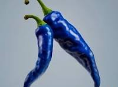

Blue chili

Description
Blue chili is a great dish because it's healthy, delicious,
and... it's BLUE!
Ingredients
- ground turkey
- yellow onion
- canned diced tomatoes
- spices
- blue dye
Steps
- cook the ground turkey in a pan
- drain out the fat from the ground turkey
- chop up the onion
- add the turkey, onion, tomatoes, and spices to a slow cooker
- cook on high heat for 3 hours
- add the blue dye
- stir it up
- enjoy!